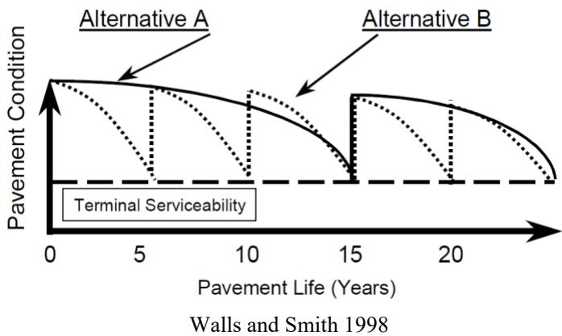
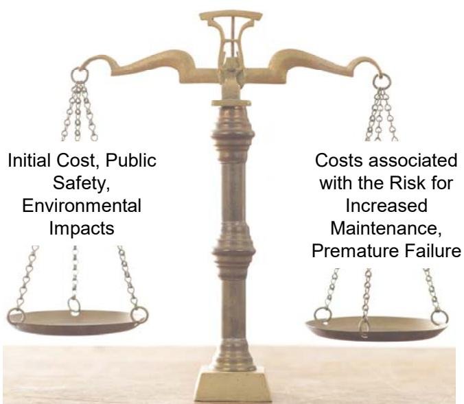
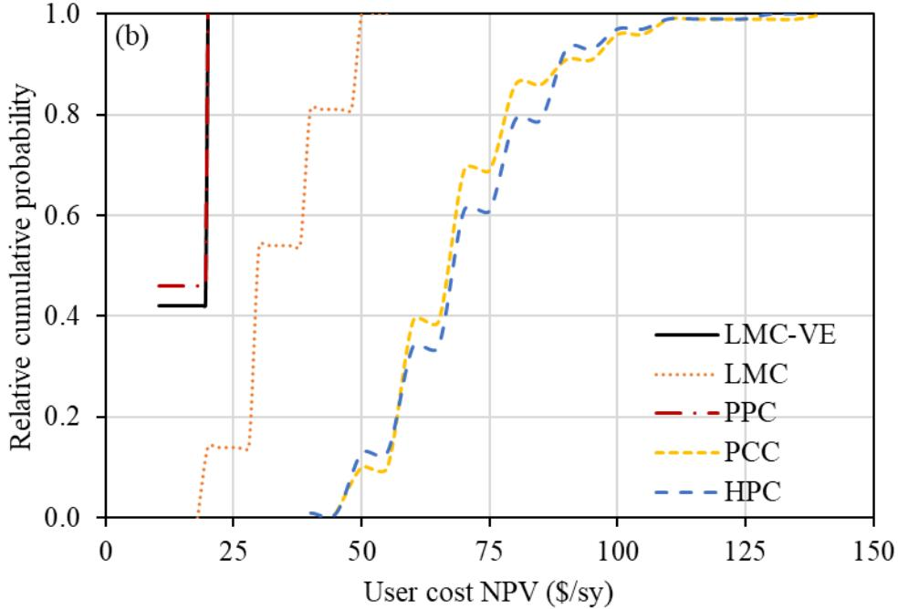
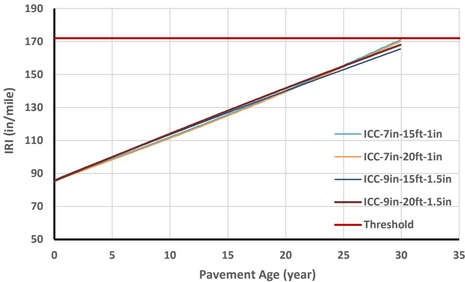
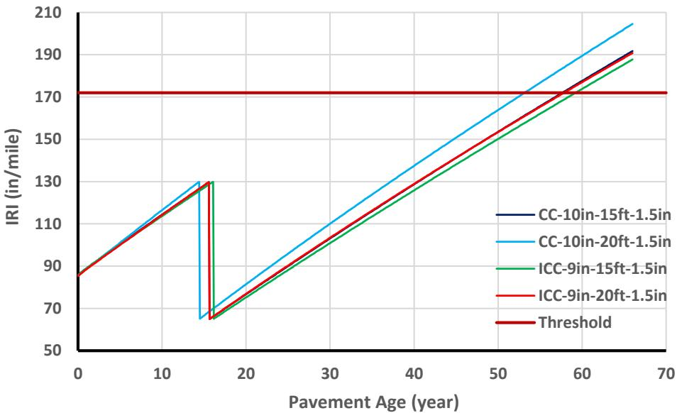
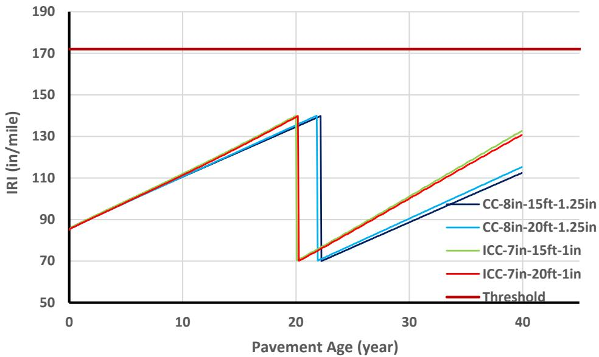

Life-Cycle Cost Analysis
Life-cycle cost analysis is an economic evaluation method that compares alternative projects or assets by accounting for all costs incurred over their entire service life, including initial construction expenses, ongoing maintenance and rehabilitation, user-related impacts, and end-of-life disposal or salvage value. The analysis systematically aggregates these direct and indirect expenditures while adjusting monetary values for inflation and discounting future cash flows to present-day equivalents using a chosen discount rate [1] [3] [4] [6] [8]. By converting all financial impacts into a common basis through metrics such as net present value or equivalent annual cost, the method enables decision-makers to evaluate the total economic performance of alternatives rather than focusing solely on short-term expenditures [1] [6].
Sources (13)
Key findings
- Internal-curing concrete extended pavement service life by approximately twenty years compared with conventional concrete, resulting in lower present-value life-cycle costs despite higher initial construction expenses [1] [8].
- Internally cured concrete allowed designers to reduce slab thickness by about one inch while maintaining performance targets, which offset the higher unit cost and produced a modestly lower net present value over a forty-year analysis period [3].
- Foundation-layer work represented about one-third of total project expenditure in the analyzed reconstruction projects, highlighting its significant contribution to overall life-cycle costs [5].
- Polymer concrete overlays incurred considerably higher agency costs due to high initial construction prices but achieved lower user costs through rapid traffic reopening capabilities [6].
- The total life-cycle cost of the LMC-VE polymer overlay fell below that of competing alternatives only when average daily traffic exceeded a threshold of approximately 3,300 vehicles per day [6].
Life-Cycle Cost Analysis Methodology & Optimization
Life-cycle cost analysis is an economic evaluation method that compares alternative projects by accounting for all costs incurred over the entire service life, including initial construction, maintenance, rehabilitation, user impacts, and residual value [3]. The methodology aggregates these expenditures on a common financial basis by applying discount rates to convert future cash flows into present-day equivalents, thereby reflecting the time value of money and inflationary effects [1] [6] [8]. This systematic approach enables decision-makers to identify the most cost-effective option by evaluating total long-term economic performance rather than focusing solely on short-term upfront expenditures [4] [6].
The figure below illustrates how these costs accumulate over time by depicting the lifecycles of two pavements during an analysis period.

Lifecycles of two pavements over an analysis period [3]The figure displays a graph comparing the pavement condition of Alternative A and Alternative B against pavement life in years. Alternative A is depicted with a solid line showing a gradual decline over a long period, while Alternative B uses dotted lines to show shorter cycles of deterioration followed by rehabilitation jumps that restore the condition.
Research problem — Agencies lack a comprehensive accounting framework to weigh higher upfront installation expenses against long-term savings from reduced maintenance, leading to decisions driven primarily by initial costs rather than total ownership value [10]. There is no established systematic method for applying life-cycle cost analysis to recycled concrete aggregate projects, leaving stakeholders without a reliable way to compare total project costs and benefits over the service life [2]. The field lacks robust, integrated life-cycle cost analysis capabilities that can evaluate multiple design alternatives and preservation strategies to determine the combination with the lowest total cost, as existing tools often ignore future rehabilitations and long-term objectives [4].
The figure below illustrates the owner-agency perspective when considering recycled concrete aggregate.

A balance scale illustrating the trade-offs between initial project costs and long-term risks. [2]The figure depicts a brass balance scale with two pans, visually representing the weighing of different factors against one another. The left pan is labeled with “Initial Cost, Public Safety, Environmental Impacts,” while the right pan lists “Costs associated with the Risk for Increased Maintenance, Premature Failure.” This visual metaphor illustrates the core principle of life-cycle cost analysis by showing how decision-makers must weigh short-term expenditures against long-term economic and performance risks.
State of the art — Life-cycle cost analysis is now a standard decision tool that integrates initial construction, maintenance, user impacts, and salvage values over extended periods using net present value or equivalent uniform annual cost calculations [3]. Current practice employs both deterministic cash-flow models and probabilistic simulations to capture uncertainty in agency and user costs, often utilizing specialized software tools for risk profiling [6]. The field is evolving toward comprehensive optimization frameworks that embed detailed user-cost factors and sustainability metrics into automated simulation workflows to minimize total life-cycle expenses across multiple design scenarios [4] [7].
The following figure illustrates the distribution of agency and user costs derived from such probabilistic analyses.

Cumulative probability distributions of user cost NPV for five overlay alternatives. [6]The figure displays cumulative probability curves representing the distribution of user costs across different pavement overlay alternatives, illustrating how probabilistic analysis captures uncertainty in these expenditures.
Findings from the reports
- Evaluated reconstruction alternatives for I-96 and found that jointed plain concrete produced a lower equivalent uniform annual cost than hot-mix asphalt, leading to the selection of the concrete option [5].
- Compared pavement designs for M-43 and determined that hot-mix asphalt yielded the lowest life-cycle cost compared to jointed plain concrete [5].
- Demonstrated that MDOT policy mandates selecting pavement designs based on the lowest equivalent uniform annual cost when comparing life-cycle expenses [5].
- Measured that foundation layers, including cement-treated base and geotextile separators, accounted for approximately one-third of the total project expenditure in the analyzed cases [5].
Novelty & rigor — The proposed methodology introduces an optimization layer that simultaneously evaluates multiple candidate initial designs alongside potential future rehabilitation actions to identify the combination yielding the lowest total life-cycle cost over a flexible design horizon [4]. Reproduction of this analysis requires implementing the specified optimization workflow using dedicated software, calibrated with realistic design parameters and validated against performance data from accelerated load frames and long-term test sections [4].
Implications — Accurate characterization of foundation properties is essential for reliable life-cycle cost analysis, as these layers represent a significant portion of total project spending [5]. Investing in higher-quality foundation materials can reduce long-term user and maintenance expenses, making it a viable strategy for improving overall lifecycle economics [5]. Precise in-situ testing is required to minimize variability in key parameters, ensuring that life-cycle cost analysis outcomes are not skewed by mis-estimates of performance [5].
Limitations — The analysis relies on laboratory-derived permeability data to predict maintenance cost reductions rather than observed long-term field performance [1]. Projected savings are based on assumed uniform rehabilitation costs and historical cycle intervals instead of project-specific or measured data [1] [5]. The methodology applies a fixed discount rate without conducting sensitivity analysis to evaluate the impact of varying economic conditions [1].
Evidence: 9 reports (1 primary)
Specific LCCA Applications: Internal Curing & LMC-VE Overlay
Research problem — Transportation agencies require a data-driven justification to specify internally cured concrete, as they must determine whether the higher initial expense is offset by reduced maintenance and broader social costs over a multi-decade service period [3] [12]. There is a need to quantify if the modest increase in initial construction cost for internally cured concrete paving yields net long-term savings through improved permeability and delayed maintenance, thereby validating its economic value proposition [1]. Decision-makers must identify specific traffic volume thresholds where the substantially higher agency costs of LMC-VE overlays are justified by lower user costs resulting from rapid opening to traffic and extended service life [6].
The following figure illustrates how the International Roughness Index of internally cured pavements evolves over their design life.

IRI of internally cured pavements over design life [3]The figure plots the International Roughness Index (IRI) against pavement age for several concrete mix designs, showing a linear increase in roughness that approaches a horizontal threshold line.
Findings from the reports
- Internal-curing concrete extended service life by approximately 20 years compared to conventional concrete, resulting in lower total life-cycle costs despite higher initial construction expenses [8].
- Internally cured pavements allowed for a one-inch reduction in slab thickness while maintaining performance targets, offsetting the higher unit cost of internal-curing materials and yielding modest net present value savings [3].
- Life-cycle cost analyses demonstrated that internally cured overlays achieved long-term financial benefits through reduced rehabilitation frequency and extended service life, despite modest increases in initial construction costs [1].
- Low-modulus viscoelastic (LMC-VE) polymer concrete overlays incurred the highest agency construction costs but achieved the lowest user costs due to rapid traffic reopening capabilities [6].
- The total life-cycle cost of LMC-VE overlays became lower than competing alternatives when average daily traffic exceeded a threshold of approximately 3,300 vehicles per day [6].
Novelty & rigor — The research introduces the first detailed life-cycle cost analysis for bridge decks utilizing lightweight fine-aggregate concrete for internal curing, linking laboratory-derived durability improvements to long-term economic advantages despite higher initial material costs [8]. Distinctive methodological approaches include explicitly modeling material-level benefits such as reduced shrinkage and thermal expansion to justify thinner slab designs in pavement applications, while avoiding assumptions of structural advantage by directly converting permeability gains into forecasted maintenance reductions [1] [3]. The analysis uniquely employs a dual-track deterministic and probabilistic framework using FHWA RealCost software to quantify the trade-off between higher agency construction expenses and significantly lower user traffic-control costs associated with rapid opening times [6].
The following figure illustrates how these cost and durability factors translate into the actual distress performance of pavements under heavy traffic loads over time.

Distress performance of the pavements with high AADTT over a long time [3]The figure plots pavement roughness, measured as IRI in inches per mile, against pavement age in years for several concrete mix designs. A horizontal red line indicates a distress threshold that the pavements eventually reach or exceed over time. The analysis determines an ideal maintenance schedule by identifying when pavement reaches maximum allowable distress, which is necessary to calculate the total economic performance of alternatives rather than focusing solely on short-term expenditures.
Reported values
| Parameter | Value | Context | Source |
|---|---|---|---|
| initial cost increase | 2.3% | Washington County | [1] |
| initial cost increase | 3.1% | Winneshiek County | [1] |
| initial construction cost increase | 3.2% | IC pavements in Iowa compared to CC pavements with the same thickness | [3] |
| initial construction cost reduction | 3.1% | decreasing the thickness of the pavement when utilizing IC concrete | [3] |
| NPV difference | 0.84% and 3.3% | IC pavement compared to CC pavement for different scenarios | [3] |
| pavement thickness | 8 and 10 in. | conventionally cured concrete pavement | [3] |
| thickness reduction | 1 in. | IC concrete compared to conventionally cured concrete | [3] |
| AADT threshold | 3,300 | LMC-VE overlay (rural road) | [6] |
| opening time | 3 to 4 hours | LMC-VE polymer concrete overlay | [6] |
| lightweight fine aggregate dosage | 20% | IC mixes | [8] |
| lightweight fine aggregate dosage | 30% | IC mixes | [8] |
| present value crossover year | 2060 | initial cumulative present value for IC section vs control | [8] |
| service life extension | 20 years | IC section compared with control section | [8] |
Across the reviewed reports, internally cured concrete consistently demonstrates long-term economic benefits despite higher initial construction costs, as extended service life and reduced maintenance needs offset the upfront premium to yield lower net present values or total life-cycle costs over multi-decade horizons. While internal curing achieves these savings through durability improvements that allow for thinner structural designs or longer rehabilitation intervals, LMC-VE overlays present a contrasting cost structure where high agency expenses are balanced by minimal user costs due to rapid traffic reopening, becoming cost-effective only when traffic volumes exceed approximately 3,300 vehicles per day. [1] [3] [6]
Implications — Designers should specify internal curing with lightweight fine aggregate for long-life bridge decks, as the extended service life and reduced permeability offset higher initial material costs over a multi-decade horizon [8]. Specifications can allow for reduced slab thickness when using internal curing to achieve net present value savings, provided that project teams implement logistical strategies to manage the handling of lightweight aggregates [1] [3]. Practitioners must incorporate traffic-volume screening into life-cycle cost models before specifying high-cost early-strength overlays like LMC-VE, restricting their use to facilities with sufficient daily vehicle counts where reduced user costs justify the higher construction expense [6].
Limitations — The analysis relies on default exposure parameters and extrapolated diffusion rates, which limits the precision of the predicted service lives and costs [8]. Results are tentative because the model assumes identical maintenance costs for different pavement types while ignoring residual value and excluding many durability-related benefits from the net present value calculation [3]. The findings apply only to specific alternatives examined, omitting other potential overlays, and are calibrated to low-traffic scenarios that may not reflect conditions where user-cost savings outweigh high initial construction expenses [6].
The figure below illustrates the lifecycle of pavements with low AADTT.

Lifecycle of pavements with low AADTT [3]The figure displays the International Roughness Index (IRI) of various pavement structures as they degrade over time, marked by upward-sloping lines representing increasing roughness. Sharp vertical drops in the curves indicate major maintenance events that restore smoothness to a lower IRI value before degradation resumes. A horizontal red line represents the failure threshold, which serves as a critical boundary for determining when rehabilitation is required to prevent excessive costs associated with delayed maintenance. By visualizing how different design parameters affect the timing and frequency of these interventions, the graph provides essential data for calculating total expenditures over a project’s service life.
Evidence: 5 reports (4 primary)
Unbonded Layer Input Parameters
Limitations — The availability of extensive parameter tables for specific directional lanes does not guarantee that a targeted analysis can be performed without explicit inquiry [7].
Evidence: 1 report (0 primary)
Related concepts
In this hierarchy
- Parent: Concrete Pavement Sustainability
- Sibling: Lifecycle Cost Analysis
Related by shared evidence
- Lifecycle Cost Analysis — shares 12 reports
- Concrete Pavement Sustainability — shares 9 reports
- Drying Shrinkage — shares 9 reports
- Cement Hydration — shares 8 reports
- CP Tech Center Reports — shares 8 reports
- Air Entraining Agent — shares 7 reports
- Concrete Curing — shares 7 reports
- Concrete Materials & Mixtures — shares 7 reports
Similar topics
- Lifecycle Cost Analysis
- Concrete Pavement Sustainability
- Concrete Overlay
- Concrete Pavement Joint
- Mechanistic-Empirical Pavement Design Guide
- Concrete Curing
- Internal Curing
- Joint Faulting
References
- A. Daghighi, P. Taylor, H. Ceylan, and Y. Zhang, "Impacts of Internally Cured Concrete Paving on Contraction Joint Spacing Phase II," National Concrete Pavement Technology Center, Iowa State University, Ames, IA, Rep. TR-746, 2021. [Online]. Available: https://www.cptechcenter.org/wp-content/uploads/2021/05/IC_concrete_paving_impacts_phase_II_field_impl_w_cvr.pdf
- S. Garber, R. Rasmussen, T. Cackler, P. Taylor, D. Harrington, G. Fick, M. Snyder, T. Van Dam, and C. Lobo, "A Technology Deployment Plan for the Use of Recycled Concrete Aggregates in Concrete Paving Mixtures," National Concrete Pavement Technology Center, Ames, IA, 2011. [Online]. Available: https://www.intrans.iastate.edu/wp-content/uploads/2018/03/RCA-Draft-Report_final-ssc.pdf
- P. Vosoughi, S. Tritsch, H. Ceylan, and P. Taylor, "Lifecycle Cost Analysis of Internally Cured Jointed Plain Concrete Pavement," National Concrete Pavement Technology Center, Ames, IA, Rep. TR-676, 2017. [Online]. Available: https://publications.iowa.gov/27038/
- D. Harrington, R. Rasmussen, D. Merritt, T. Cackler, and P. Taylor, "Long-Term Plan for Concrete Pavement Research and Technology—The Concrete Pavement Road Map (Second Generation): Volume II, Tracks (FHWA-HRT-11-070)," National Center for Concrete Pavement Technology, Iowa State University, Ames, IA, 2012. [Online]. Available: https://www.fhwa.dot.gov/publications/research/infrastructure/pavements/pccp/11070/11070.pdf
- D. J. White, P. K. R. Vennapusa, H. H. Gieselman, A. J. Wolfe, A. E. Johnson, R. Franz, and L. Zhao, "Improving the Foundation Layers for Concrete Pavements," National Concrete Pavement Technology Center and CEER, Iowa State University, Ames, IA, Rep. TPF-5(183), 2015. [Online]. Available: https://www.intrans.iastate.edu/wp-content/uploads/2021/01/concrete_pvmt_foundations_lessons_learned_and_framework_for_mechanistic_assessment_w_cvr.pdf
- K. Wang, B. M. Shankaramurthy, A. Anand, Y. Sargam, K. Freeseman, and B. Phares, "Performance Evaluation of Very Early Strength Latex-Modified Concrete (LMC-VE) Overlay," Institute for Transportation, Iowa State University, Ames, IA, Rep. TR-771, 2024. [Online]. Available: https://bec.iastate.edu/wp-content/uploads/2024/10/performance_evaluation_of_LMC-VE_overlay_w_cvr.pdf
- J. K. Cable, F. S. Fanous, H. Ceylan, D. Wood, D. Frentress, T. Tabbert, S. Y. Oh, and K. Gopalakrishnan, "Design and Construction Procedures for Concrete Overlay and Widening of Existing Pavements," Center for Portland Cement Concrete Pavement Technology, Iowa State University, Ames, IA, Rep. TR-511, 2005. [Online]. Available: https://www.intrans.iastate.edu/wp-content/uploads/2018/03/oreo_design.pdf
- P. Taylor, T. Hosteng, X. Wang, and B. Phares, "Evaluation and Testing of a Lightweight Fine Aggregate Concrete Bridge Deck in Buchanan County, Iowa," National Concrete Pavement Technology Center and Bridge Engineering Center, Ames, IA, Rep. TR-648, 2016. [Online]. Available: https://www.intrans.iastate.edu/wp-content/uploads/2018/03/Buchanan_LWFA_bridge_deck_w_cvr.pdf
- H. Ceylan, S. Kim, Y. Zhang, S. Yang, O. Kaya, K. Gopalakrishnan, and P. Taylor, "Prevention of Longitudinal Cracking in Iowa Widened Concrete Pavement," Institute for Transportation, Ames, IA, Rep. TR-700, 2018. [Online]. Available: https://www.intrans.iastate.edu/wp-content/uploads/2018/07/longitudinal_cracking_prevention_in_widened_concrete_pvmt_w_cvr.pdf
- M. L. Porter and R. J. Guinn, Jr., "Synthesis of Dowel Bar Research / Assessment of Dowel Bar Research," Center for Transportation Research and Education (CTRE), Iowa State University, Ames, IA, Rep. HR-1080, 2002. [Online]. Available: https://www.intrans.iastate.edu/wp-content/uploads/2018/03/dowelbarsynthesis.pdf
- P. Tikalsky, V. Schaefer, K. Wang, B. Scheetz, T. Rupnow, A. St. Clair, M. Siddiqi, and S. Marquez, "Development of Performance Properties of Ternary Mixes, Phase 1," Center for Transportation Research and Education, Ames, IA, Rep. TPF-5(117), 2007. [Online]. Available: https://www.intrans.iastate.edu/research/completed/development-of-performance-properties-of-ternary-mixes-phase-1/
- W. J. Weiss and L. Montanari, "Guide Specification for Internally Curing Concrete," National Concrete Pavement Technology Center, Ames, IA, Rep. TPF-5(286), 2017. [Online]. Available: https://www.intrans.iastate.edu/wp-content/uploads/2018/09/IC_guide_spec_w_cvr.pdf
- J. Gross, D. King, D. Harrington, H. Ceylan, Y. A. Chen, S. Kim, P. Taylor, and O. Kaya, "Concrete Overlay Performance on Iowa's Roadways (Field Data Report)," National Concrete Pavement Technology Center, Ames, IA, Rep. TR-698, 2017. [Online]. Available: https://www.intrans.iastate.edu/wp-content/uploads/2017/09/Iowa_concrete_overlay_performance_w_cvr.pdf
Feedback on this page